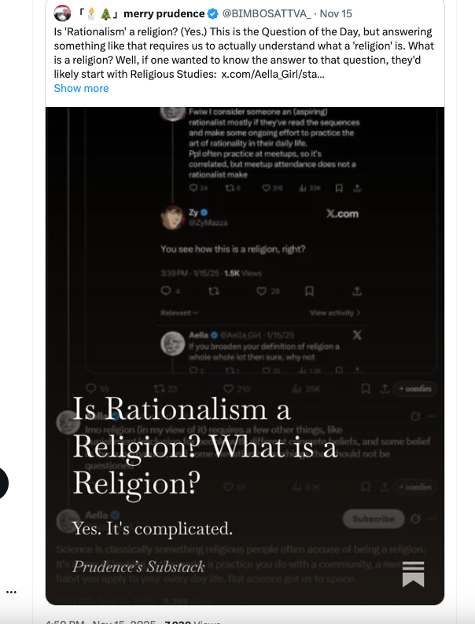
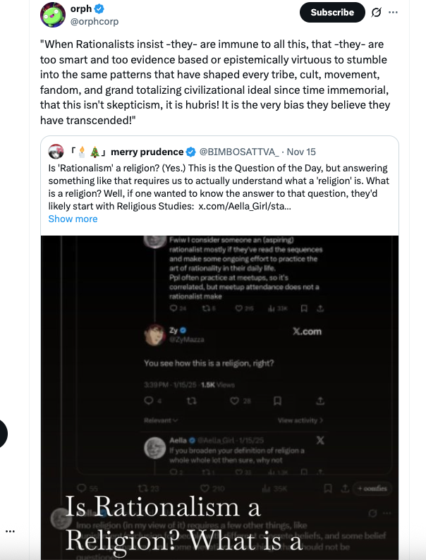
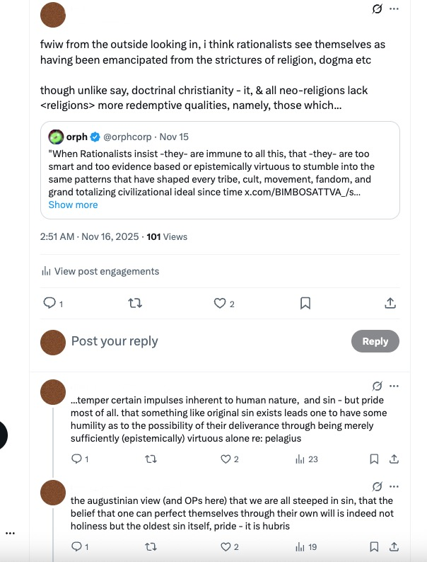
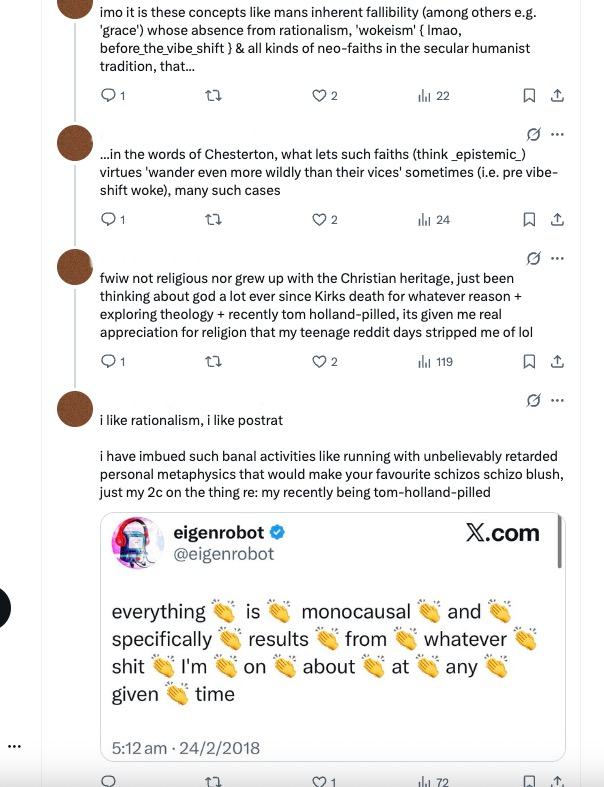

19/11/25
Context
Below I will be sharing some source/quote tweets which kicked off this discourse in my corner of twitter, my tweet thread response to it all, and finally an essay regarding the topic on the whole.
It hit on several topics which I love including theology, the limits of rationality/post-rationalism, and philosophy (my love has always been cursory, though this inspired me to start reading it seriously!).
I haven't written an essay in years or published one, but this topic moved me enough to do so.
Some Notes
Below I will be sharing some source/quote tweets which kicked off this discourse in my corner of twitter, my tweet thread response to it all, and finally an essay regarding the topic on the whole.
It hit on several topics which I love including theology, the limits of rationality/post-rationalism, and philosophy (my love has always been cursory, though this inspired me to start reading it seriously!).
I haven't written an essay in years or published one, but this topic moved me enough to do so.
Tweets
Tweet #1

#1.1 (Aella): "Fwiw I consider someone an (aspiring) rationalist mostly if they've read the sequences and make some ongoing effort to practice the art of rationality in their daily life. Ppl often practice at meetups, so it's correlated, but meetup attendance does not a rationalist make"
#1.2 (Zy in reply to #1): "You see how this is a religion, right?"
#1.3 (Zy quote tweets his reply (#2) to the original tweet (#1)): "This is still so funny to me. Classic rationalists!"
Tweet #2
#2.1 Prudence's Substack article "Is rationalism a Religion? What is a Religion?", in response to the above, which is what kicked off the whole discourse/beef on this.
Tweet #3
3.1
The homie Orph's take on Prudence's essay.
My Quote Tweets
4.1
First viewport of my quote tweet thread of Orph's QT
Viewport #2
5.1
Scrubbed my handle but not much anonymity if you really wanted to find me lol, but I digress.
Essay
...